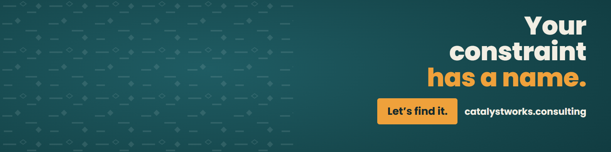
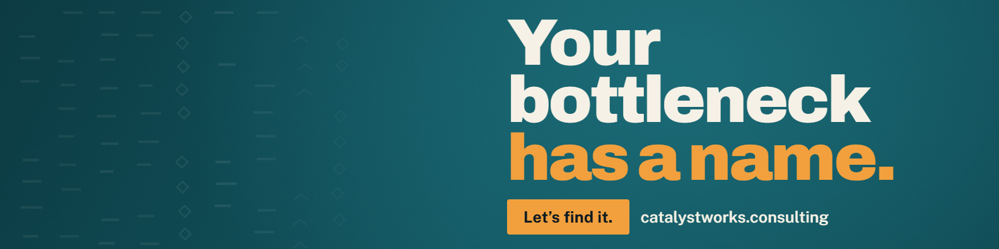

This is the ONE page for LinkedIn About/headline work, going forward. Every future revision updates this same page and this same URL — prior versions move into the History section at the bottom instead of a new page getting created. Current final copy, ready to paste, is in Headline and About below.
Before today's review, this page's recorded "current" headline (the 2026-09-23 entry, now in History below) did not match what was actually live on Boubacar's LinkedIn profile. His real live headline, read directly off his profile screenshot on 2026-09-25, had never been logged back to this page — most likely a variant he pasted himself at some point that no session recorded here. The page was then treated as authoritative for "current state" without anyone re-verifying it against the live profile first. This is the same class of bug as any page that embeds a copy of live state with no sync mechanism: the copy goes stale silently and nobody notices until someone checks the real source.
Recommendation (not built, just flagged): before any future session acts on a "current" or "live" value on this page, re-verify it against a fresh screenshot of the actual LinkedIn profile rather than trusting this page's own record at face value. This page is corrected as of today, but it can go stale again the exact same way if that check is skipped.
Revised 2026-09-24 after your note: "Tell them what is not visible in the resume." The background paragraph is gone. In its place is how you think and how you work: when AI is the wrong answer, why the question comes before the tool, "you run the business, I run the systems with you," and why you measure hours given back. Everything is your own words or your own position, nothing invented. Left is what is live on LinkedIn today. Right is the proposal, and the box is editable: change any word, it saves as you type.
Most leaders I talk to aren't behind on AI. They're buried in it. I find the real roadblock, not the symptom everyone points at, and we fix that first. A report that took six to eight hours now takes ten minutes. When something in how your organization runs isn't working, and nobody can quite name it, that's where I come in. I work in three steps, and always in this order. 1. Assess. I listen first. Then we find the real roadblock, not the symptom everyone points at, and get honest about whether AI belongs in the answer at all. That step alone tells you what's worth fixing. 2. Roadmap. We build a plan around that roadblock: what gets fixed first and where AI fits. You see the whole path before anything gets built. 3. Build. We put the right structure in place, using AI only where it actually helps, not because it's trendy. We tackle one problem at a time, and I stay alongside you as it goes in, so it still works after the project ends. So I don't just build AI tools. I build better users of AI. Sometimes that starts in HR: hiring that drags, onboarding nobody owns, managers buried in admin. Sometimes it's operations, sales, or finance. Wherever the work is stuck, the three steps don't change. I came up through HR, and today I run my own business on AI, on a system I built myself. I use what I recommend every day. This is for you if: • Your team has AI tools, and nobody is using them well • Something keeps slowing the business down, and nobody can say why • You want someone in the room with you, working on the problem If that's you, message me with the thing that's stuck.
Word-level change, live vs proposed
What changed from the first proposal, and where each line comes from
Decision, 2026-09-25
Approved by Boubacar: "That About section is great. I feel good. I'm using that About section." He has since confirmed he pasted it to LinkedIn — it is live on his profile as of 2026-09-25. This compare box is kept as the record of what changed and why; the "Live now" column on the left reflects what was live before this update.
One thing to confirm
"A report that took six to eight hours now takes ten minutes" is still carried over from your live version as written, with no employer attached.
Checks run
Voice gate: 93/100. No em-dashes, nothing invented, every added line traced to something you said. LinkedIn caps the About at 2,600 characters and the counter above shows where the draft sits. Confirmed pasted and live on LinkedIn as of 2026-09-25.
AI + HR | For teams buried in AI tools with no clear place to start | We get clear together, then build what fixes it, in HR and wherever else it's stuck
2026-09-25: Boubacar reviewed the WHO/WHAT/FOR-WHOM candidate proposed 2026-09-24 and rejected it: "I still like my headline versus this one here." This is his actual live headline, read directly off his own profile screenshot the same day — verbatim, nothing changed here. The rejected candidate and the blind-A/B-test rationale behind it are preserved in History below; the full backing research stays in Section 4 as reference.
I help companies put AI to work without the confusion. They are not buying the AI. They are buying the outcome: the answer already sitting in their own data, made usable, inside their own systems. I come in, assess what's really stuck, build a roadmap around it, then put the fix in alongside the team, using AI only where it helps. It works because I run my own business the same way, on a system I built myself. Ten years in global HR leadership for a Fortune 100 company, most recently four years based in Dubai, is where I learned to find the constraint that's actually slowing a team down. Today I run Catalyst Works, and I'm always open to the right project or the right conversation.
Current live banner: "Your constraint has a name. Let's find it." catalystworks.consulting. Same design, same colors, same layout, same CTA as the prior banner — the only change is the word "bottleneck" → "constraint" (Boubacar posted content moving away from "bottleneck" as a word, so the banner had to follow).

Download banner PNG (1584×396)
The editable source lives in the boubacarbarry-site repo at
assets/design-templates/linkedin-banner/template.html — an HTML/CSS template
with the headline, CTA label, and URL set as CSS custom properties at the top of the file.
To re-render: edit the values in the :root { ... } block, serve the folder
locally, screenshot it at exactly 1584×396, and drop the new PNG into this folder. Full
instructions (incl. the design reference: colors, font, pattern) are in that folder's
README.md. A future word swap is now a one-line edit + one render, not a
from-scratch design pass.
2026-09-25 — superseded: "Your bottleneck has a name. Let's find it." catalystworks.consulting. Replaced because Boubacar posted content that moves away from the word "bottleneck," so the banner needed to match. Design, colors, and layout are otherwise identical to the current banner above.

The research behind the WHO/WHAT/FOR-WHOM candidate that was proposed for Section 1 on 2026-09-24 and rejected by Boubacar on 2026-09-25 in favor of his existing live headline: a blind A/B test against the old live headline, benchmark research on how top HR/consulting-figure LinkedIn profiles position themselves, and the iteration path that got here. Kept below as reference, not as an active recommendation.
Blind A/B test
A blind judge (no knowledge of which version was "his" or which was proposed) was shown two versions and asked to pick the stronger one, with reasoning.
| Version | What it was | What it implied to the judge |
|---|---|---|
| A | The old live headline + About, pre-refinement | A generalist AI/HR consultant with a strong operating philosophy, light on concrete proof, still building their book of business. |
| B | The proposed version (this page's refined headline + About) | Someone with a real, verifiable corporate pedigree — more senior and more concretely positioned. |
Verdict: B
Reasoning, verbatim from the judge:
Benchmark research — how top HR/consulting-figure headlines are built
Five figures' live LinkedIn headlines were pulled and sourced. Four verified directly or across multiple sources; one (Norm Smallwood) is flagged lower confidence below. A sixth figure researched, Ravin Jesuthasan, could not be verified against a live source and is not included as fact.
| Figure | Live headline | Confidence | Source |
|---|---|---|---|
| Dave Ulrich | Speaker, Author, Professor, Thought Partner on Human Capability (talent, leadership, organization, HR) | Verified — direct profile fetch | linkedin.com/in/daveulrichpro |
| Josh Bersin | Global Industry Analyst, I study all aspects of HR, business leadership, corporate L&D, recruiting, and HR technology | Verified — multi-source | linkedin.com/in/bersin |
| Marc Effron | President, Talent Strategy Group; Harvard Business Review book author: One Page Talent Management & 8 Steps to High Performance | Verified — multi-source | linkedin.com/in/effron |
| William Tincup | Editor, Analyst, Advisor & Host @ WRKdefined | Verified-ish — single source | linkedin.com/in/tincup |
| Norm Smallwood | I develop businesses and their leaders to deliver results | Lower confidence — flagged explicitly | linkedin.com/in/norm-smallwood |
A sixth figure, Ravin Jesuthasan, was researched but his headline could not be verified against a live source. Not presented as fact and not included in the table above.
LinkedIn's own official best-practice guidance
Synthesized pattern
Honest gap assessment
The earlier draft headline had no role or credibility noun and no searchable keyword beyond "AI" and "HR." It also failed the mobile-crop test — it got cut off mid-clause at roughly 70 characters, the point where most readers stop seeing it.
Final headline candidate — WHO / WHAT / FOR WHOM
AI + HR Consultant | I help leaders fix what's actually stuck
Iteration path — earlier headlines tried and rejected tonight
Your bottleneck has a name, I find it and build what fixes it
Rejected: repeated the banner's own line.
I close the gap between what your data can already tell you and what your team can actually use
Won an earlier blind test, but too abstract and missing a role noun.
HR consultant who builds the AI instead of just recommending it
Rejected as still not landing.
I find what's actually broken in your business, then fix it with AI I've already tested on my own
A from-scratch attempt, superseded by the WHO/WHAT/FOR-WHOM version above.
Everything below was live on this page at some point, or was a candidate considered for it. Kept so changes can be tracked over time on this one page, instead of scattered across separate dated pages.
Headline candidate (rejected, was briefly shown as Section 1's "final" 2026-09-24)
AI + HR Consultant | I help leaders fix what's actually stuck
Proposed 2026-09-24, rejected by Boubacar 2026-09-25 — he prefers his current live headline. Blind test favored this version on credibility-signal grounds, but that did not outweigh his own preference. Full blind-A/B-test rationale and benchmark research stay in Section 4 as reference.
What was wrong
This page's "current" headline record (the 2026-09-23 entry below) did not match what was actually live on Boubacar's LinkedIn profile at review time on 2026-09-25. His real live headline — "AI + HR | For teams buried in AI tools with no clear place to start | We get clear together, then build what fixes it, in HR and wherever else it's stuck" — had never been logged to this page. See the correction note near the top of the page for the root cause and the recommendation going forward.
Headline (was live in Section 1)
AI + HR | I close the gap between what your data can already tell you and what your team can actually use
Won an earlier blind test against the pre-refinement headline, but Boubacar found it too abstract and missing a role/credibility noun. Replaced 2026-09-24 by the WHO/WHAT/FOR-WHOM headline in Section 1, per the research in Section 4.
Headline candidate (not used)
AI + HR | We find what's actually stuck, then build what fixes it
Drafted to fix an overlap with the banner line, on a separate page
(/review/linkedin-profile-update/) created before this canonical page was
found. Superseded same day by the final headline in Section 1 above. That page now
points here.
Candidate 1 — recommended at the time
Headline: AI and HR | Your data is already your moat, you are just not using it | I make it usable, inside your own systems About opening: AI is not about buying new tools. It is about finally using the toolkit already inside the business, and for most companies that toolkit starts with their own data. That data is their moat. Almost nobody is using it.
Candidate 2
Headline: I help companies put AI to work without the confusion | Your data already holds the advantage | We make it usable, safely, inside your systems About opening: AI is not about new tools. It is about finally using the toolkit already inside the business, starting with the data most companies never go back and read. Most companies are sitting on the answer already and cannot reach it. Closing that gap is the work.
Candidate 3 — shortest
Headline: AI and HR | You already have what your competitors are paying for | I help you use it, without it ever leaving your systems About opening: Most companies are already sitting on their competitive advantage. It is buried in data nobody has gone back to read. AI does not have to be new. It has to finally get used.
None of these three were the version ultimately used; the final headline and About moat/differentiator framing evolved further before landing on the current text in Section 1 and 2 above.
{kind=link}